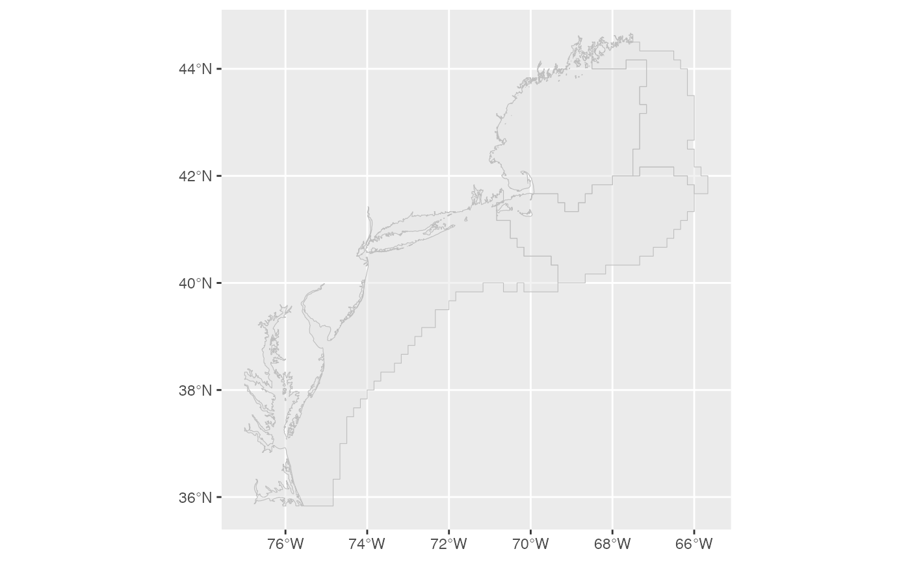

Connect to the database
Once you are granted permission to access the database and have Oracle’s instant Client installed you can make a connection as follows:
channel <- dbutils::connect_to_database(server="servername",uid="yourUsername")channel is an object inherited from the
DBIConnection-class. This object is passed as an argument to functions
in survdat
Pull Data
Pulling the data can take up to 15 minutes to complete. see
get_survdat_data() for details. To pull the survey data
with conversion corrections applied use the following:
data <- get_survdat_data(channel)data is a list of 5 elements.
- The data
- The set of sql statements made to pull the data
- The function call statement
- The date of the pull
- The version of the package used to create the data pull
For detailed information regarding the different types of data pulls
please review vignette("pullingData")
Plot the shapefiles
Two shape files are included in the package, strata.shp
and EPU.shp
To read and plot the EPU.shp file:
areaPolygon <- sf::st_read(dsn = system.file("extdata","EPU.shp",package="survdat"), quiet=T)
plot_shapefile(areaPolygon)
Swept area biomass
Swept area biomass is estimated for particular regions of interest. These regions are specified via shape files.
All shapefiles are required to be an sf (simple features) object.
- To calculate swept area biomass for any one of these regions, say Georges Bank in the Spring:
calc_swept_area(data$survdat,
areaPolygon=areaPolygon,
areaDescription="EPU",
filterByArea="GB",
filterBySeason = "SPRING")The filterByArea value should be one of the values found
in the areaDescription field of the shapefile
- To return the values in TIDY format add the
tidy=Targument:
calc_swept_area(data$survdat,
areaPolygon=areaPolygon,
areaDescription="EPU",
filterByArea="GB",
filterBySeason = "SPRING",
tidy=T) To visualize the overlap of the survey data and the regions, first define a coordinate reference system (crs) in which to project both the points and the shapefile. Convert the LAT and LON coordinates to the WGS84 reference ellipsoid (crs = 4326)